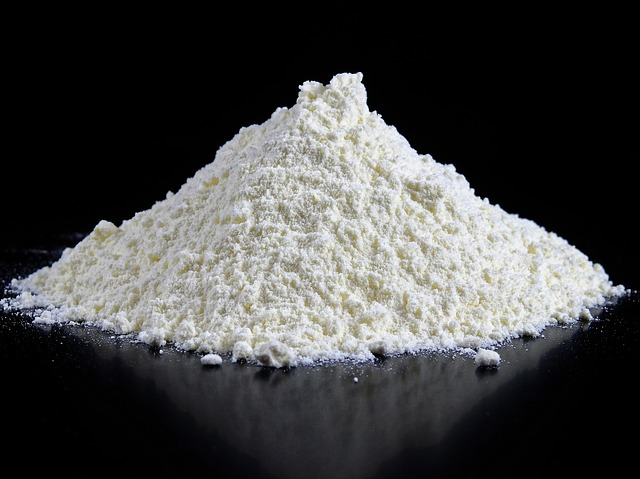
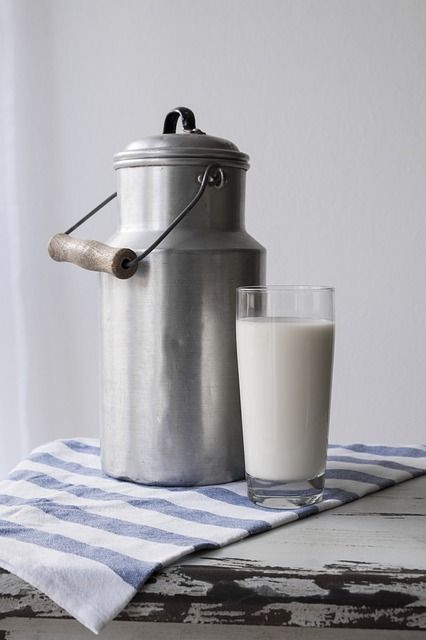
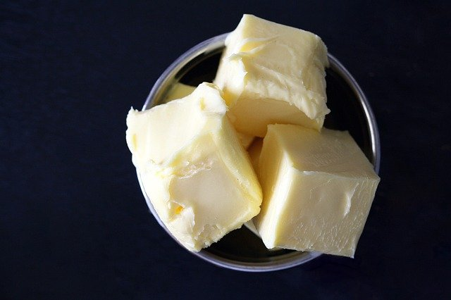

Lipnių cinamoninių bandelių pasaka
|
Tešlai |
Įdarui |
| Sudedamosios dalys |
Kvietiniai miltai |
Pienas |
Mielės |
Cukrus |
Sviestas |
Kiaušinis |
Druska |
Minkšto sviesto |
Cukrus |
Cinamonas |
| Paveiksliukas |

|

|

|

|

|

|

|
|
|

|
| Kiekis 1 porcijai |
500g |
250ml |
20g |
1 šaukštas |
60g |
1vnt. |
1 šaukštelis |
120g |
150g |
3 šaukšteliai |
- Pieną pakaitinkite beveik iki virimo, leiskite jam atvėsti ir, kol dar šiltas,sumeskite į jį
gabaliukais pjaustytą sviestą, kad ištirptų. Pieną greičiau atvėsinsite, jei pilstysite iš vieno indo į
kitą. Arba įstatykite indą su karštu pienu į šalto vandens kupiną indą.
- Mieles ištrinkite su šaukštu šilto pieno ir žiupsneliu cukraus, leiskite joms pradėti
burbuliuoti.
- Kiaušinį lengvai išplakite su likusiu cukrumi.
- Miltus i persijokite ir sumaišykite su druska. Į miltus supilkite mieles, išplaktą kiaušinį ir
beveik visą iki kūno temperatūros atvėsusį pieną(pasilikite apie 50ml). Išmaišykite šaukštu, paskui ranka
dubenyje viską paminkykite. Priklausomai nuo to, kokius miltus vartojate, tešla gali būti gana drėgna ir
lipni. Jei tešla labai kieta ir matosi dideli nesuminkytų miltų šuorai, įpilkite dar pieno.Tešla turi būti
drėgnoka ir kibti prie rankų. Leiskite tešlai pastovėti apie 10 minučių ir sugerti drėgmę, tada išimkite iš
dubens ir kokias 7 minutes paminkykite. Jei tešla nepakenčiamai limpa prie rankų ir jos minkyti neįmanoma,
įberkite šiek tiek miltų, bet geriau, kad ji būtų drėgnesnė. Kuo daugiau minkysite, tuo mažiau ji lips prie
pirštų (svarbu minkyti švariomis, tešla neaplipusiomis, rankomis).
- Paminkytą tešlą dėkite į dubenį, uždenkite rankšluosčiu ar lėkšte ir leiskite apie 40 minučių
pakilti. Priklausomai nuo metų laiko ir temperatūros, gali prireikti ir truputi daugiau laiko. Tešloje
pastebėsite akivaizdžius pokyčius - ji turi būti pakilusi, minkšta ir putni.
- Kol tešla kils, pasiruoškite kitus dalykus: cukrų sumaišykite su cinamonu (sviestas būtinai turi
būti minkštas, tad jei jūsiškis šaldytuve - metas jį traukti lauk ir ieškoti jam šiltos vietelės).
- Pakilusią tešlą išimkite iš dubens, iškočiokite iš jos stačiakampį ( apie 0,5-1cm storio),
tešlos paviršių patepkite sviestu(turėtumėte sunaudoti apie pusę nurodyto sviesto kiekio) ir pabarstykite
daugiau nei puse turimo kiekio cinamoninio cukraus. Tada susukite tešlos gabalą į tamprų vyniotinį
- Kepimo indo dugną ir kraštus gausiai ištepkite sviestu(sunaudokite likusią pusę). Sviestą
apibarstykite likusiu cukraus mišiniu.
- Vyniotinį supjaustykite į pasirinktą skaičių gabaliukų, tada bandeles sudėkite vieną šalia kitos
į skardą, tačiau dėkite taip, kad joms dar liktų vietos pakilti ir padidėti beveik dvigubai.
- Įkaitinkite orkaitę iki 200℃. Kol orkaitė įkais, bandelės turi būti pakilusios. Jei
abejojate, ar iškepė, palikite jas dar penkias ar dešimt minučių orkaitėje.
- Iškepusioms bandelėms leiskite truputi atvėsti skardoje, tada atsargiai, pasidėję patogią
lentelę ar didelę lėkštę, apverskite kepimo indą, kad bandelės iškristų - pamatysite blizgančias ir lipnias
bandelių apačias. Bandelių kraštai patys skaniausi.